A NetBeans-platform IDE for the modern web where every build tool is a piece of hardware you patch with cables, every studio is a first-class suite tab, and every feature below shipped through a gated release with its proofs attached. Every screenshot on this page is the real product.
Your toolchain as hardware: VERITAS runs tests with a coverage floor, IGNITION serves anything, ANVIL is a local EVM chain, SPECTER drives Playwright, ORACLE explains failures. Wire a cable from a FAIL jack to a trigger and lanes coordinate themselves. Patches save as JSON, export to GitHub Actions CI, and resurrect after a kill -9 — a third-party Device SPI lets anyone build new hardware.
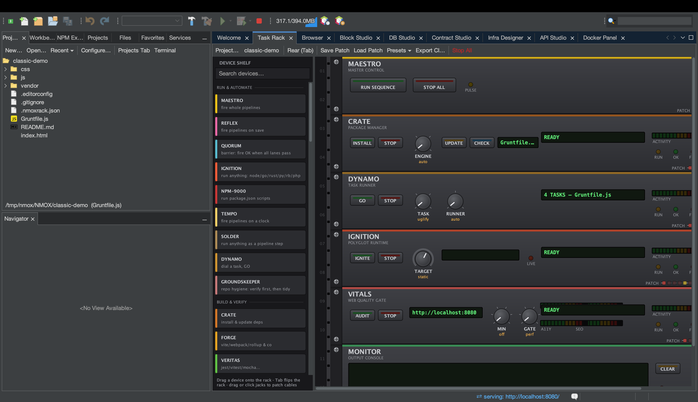
Select code in any of 77 languages and hold a conversation about it — follow-ups carry the full history, so “that syntax” means what it meant one answer ago. The rack’s ORACLE device does the same for failed runs: press EXPLAIN, then keep asking. Each flow has its own one-time consent naming exactly what is sent (the selection, file name, language, your question — never the rest of the file), keys live in the OS keychain, and the transcript shows precisely what the model was told. Fast (Haiku) or Deep (Sonnet), remembered.
# UFCS style — reads naturally as a pipeline echo numbers.filter(proc(x: int): bool = x > 2)
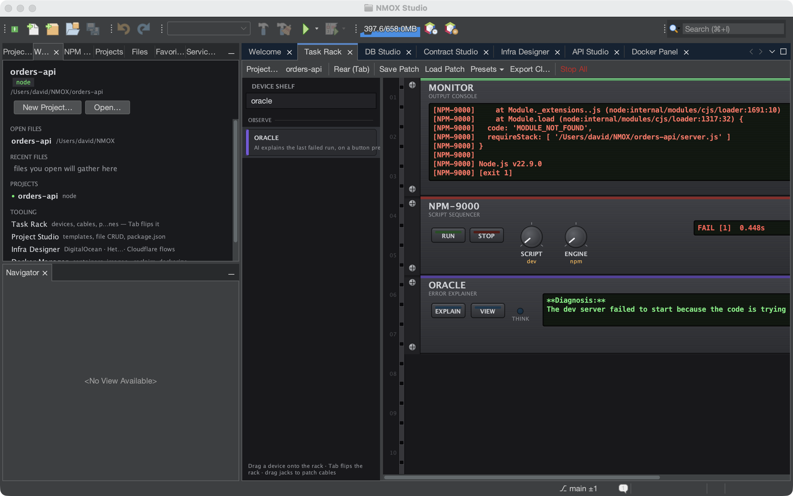
From TypeScript to Fortran to COBOL to the contract languages the Web3 kit writes (Clarity, Aiken, Tact) — highlighting, typing intelligence, spellcheck-in-comments, keyword completion, and a structure outline for 60+ mimes. Language servers launch through Workspace Trust: a cloned repo’s committed binaries never run without your yes.
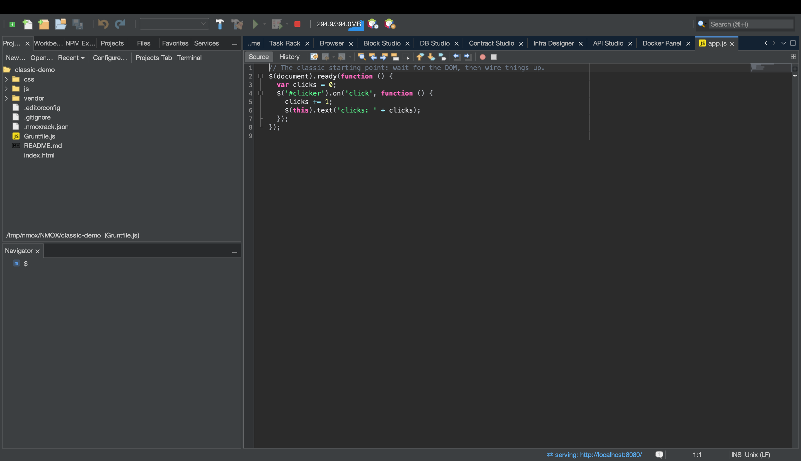
Breakpoints for JavaScript and TypeScript with zero setup — a vendored js-debug adapter plus a session multiplexer the platform lacked. “Debug in Chrome” launches a throwaway-profile browser at your live dev server and page breakpoints hit in the IDE. Every debug spawn passes the same trust gate, and a stopped session leaves zero orphan processes.
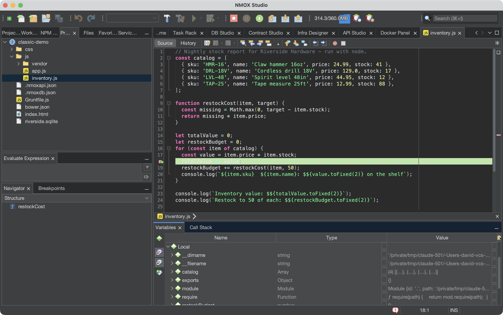
One wizard scaffolds a live-proven starter — manifest, contract, native test, next-step notes — for eleven chains. Every template ran green against its real toolchain before it shipped, and each chain teaches its own refusal idiom: Aiken declares failing tests, TON bounces the transaction, Bitcoin makes the spend unspendable. Contract Studio then gives you an ABI-driven Interact pane, live block/event watch, gas and EIP-170 verdicts — and by construction, private keys never touch the IDE.
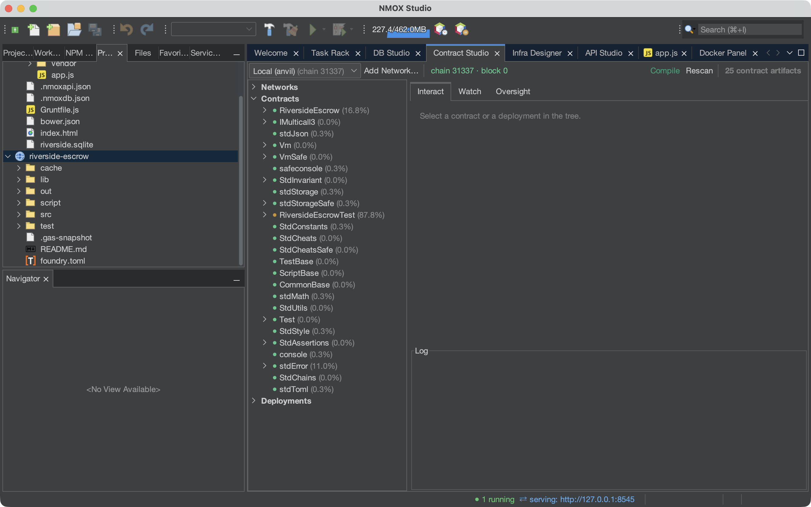
Compose real Web Components from interlocking typed pieces — the generated custom element appears beside the canvas with per-piece code ranges, and the round trip is law: generate(parse(code)) is byte-identical, the live preview serves your whole component library so components render composed, and the canvas is fully keyboard- and screen-reader-operable.
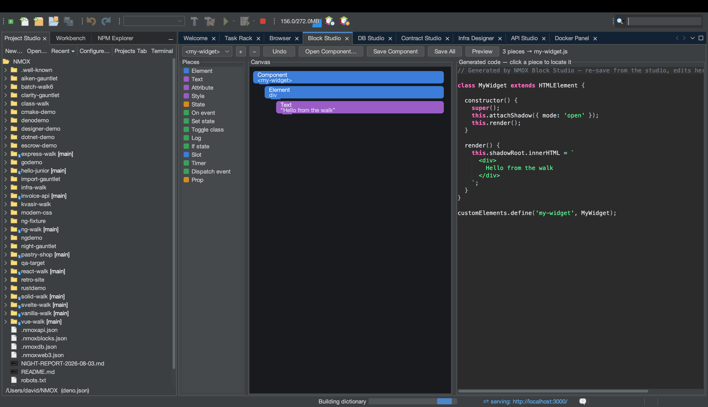
SQLite, PostgreSQL, MySQL, MariaDB, MongoDB, CouchDB — schema tree, kind-aware console, per-statement grids with in-grid row editing (PK-gated, Apply previews the exact UPDATEs). Passwords are keychain-only, EXPLAIN refuses multi-statement text, and a hostile server can’t read your files: local-infile is off at connect.
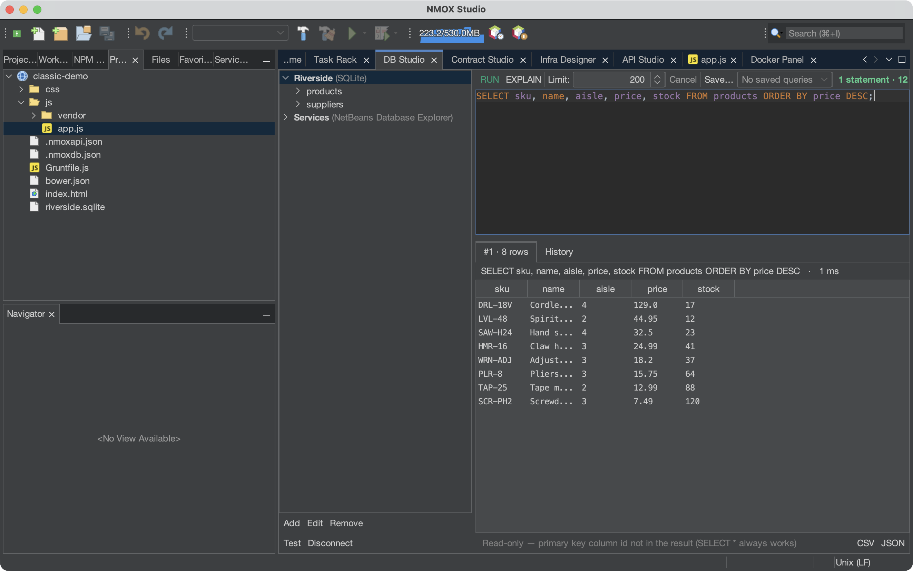
Postman-style collections with assertions and per-response security-header grades — every response streams through a capped reader, sends are cancellable, and auth tokens live in the OS keychain, never in the committable workspace file.
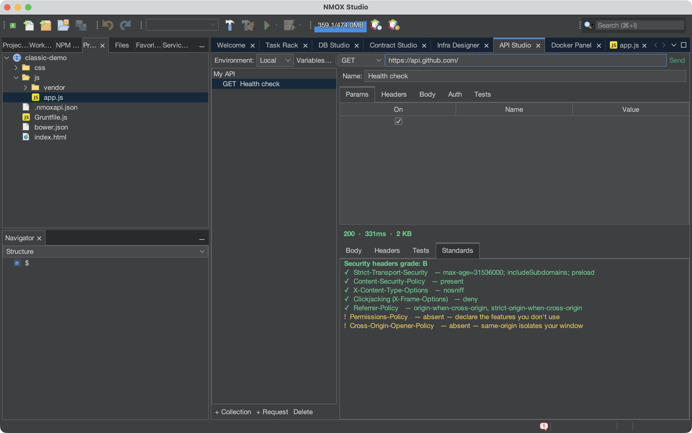
A Node-RED-style canvas for real cloud resources: drag droplets and DNS, see cost estimates, deploy with cloud-init, sync live resources back and watch drift. Destroy confirmations default to the safe button, the canvas locks during live operations, and tokens are keychain-only.
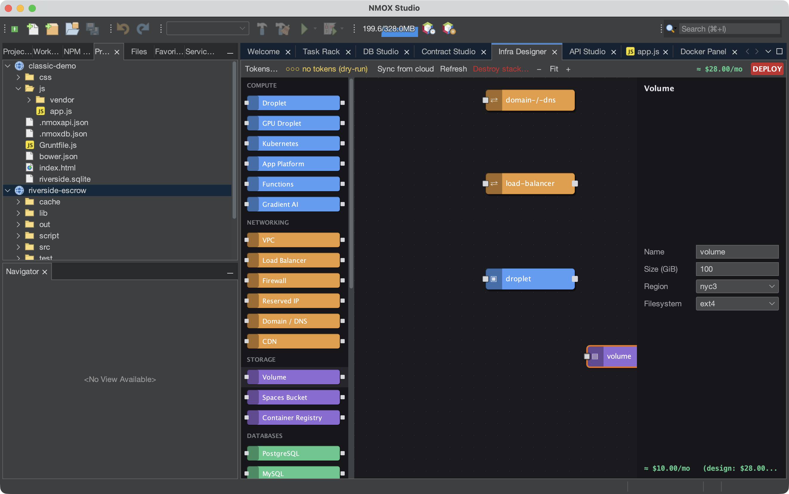
Engine overview, containers, images, volumes, networks — plus a Dockerize tab that generates a production Dockerfile, .dockerignore and compose file tuned to your detected toolchain.
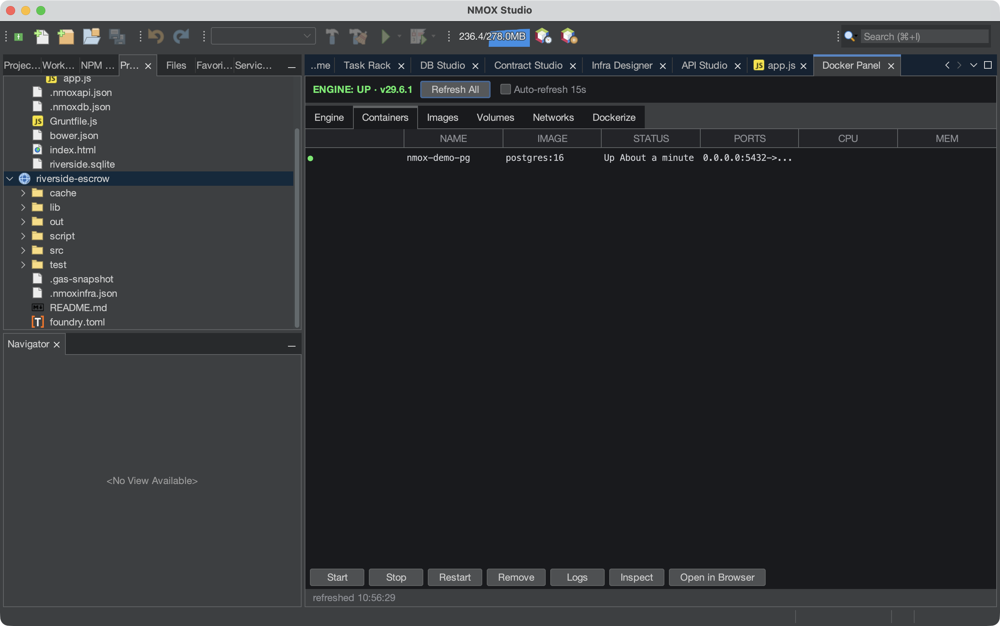
Every space is a real project: sample code, a walked tutorial, and a rack pre-wired with an in-rack REPL you actually type into. From jQuery to Gleam to a Cardano validator — each one proven against its real toolchain before it shipped, with an INSTALL button when the interpreter is missing. No terminal needed.
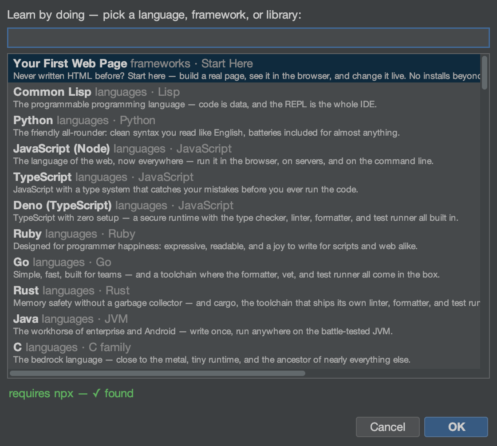
Projects, rack devices, live dev servers, API requests, database connections, infra nodes — one search field reaches all of it, and the ⇄ chip on the status line always knows what’s serving where.
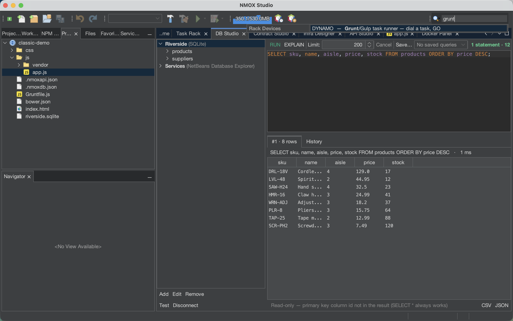
Install: brew install nmox/nmox-studio/nmox-studio
· macOS / Linux / Windows installers with bundled runtimes on every release